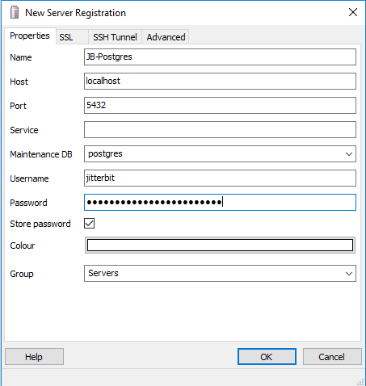
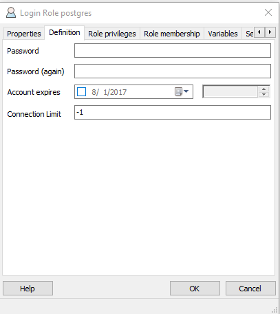

List Types
Here are guidelines for bulleted lists and numbered lists.
Bulleted Lists
When the order of items isn't important, use an unordered or bulleted list. Alphabetize or use another order, but carry the consistency over to other lists. For example, Cloud Studio lists a connector's activity in a specific order.
Bulleted lists should have:
- A complete lead-in sentence with a colon
- More than one list item
- Up to two levels of lists
- Parallel sentence construction
- One idea for each list item
- A period or other punctuation if the list items are complete sentences
Here is an example of a bulleted list:
The following example of a bulleted list contains a complete lead-in sentence. Each item in the list uses parallel construction and doesn't contain more than one phrase.
In addition, users with an expired subscription have these permissions: * View the list of projects from the project index. * Open projects to view within the project designer. * View project and component configuration screens (for example, connection/activity, transformation, script).
Numbered Lists
When order is important, use ordered, or numbered lists. They're also called procedural lists.
Numbered lists should have:
- A complete lead-in sentence with aperiod or a colon
- More than one list item
- Up to two levels of lists
- Parallel sentence construction
- One action for each item
Here is an example of a numbered list for a procedure:
-
Launch PGAdmin.
-
Click File and select Add Server.
-
Enter a Name for the connection.
-
Change the Username from
postgrestojitterbit. -
Populate the Password found in the
[DbInfo]section of theJitterbit.conffile. -
Optional: Set Colour, if desired.
-
Click OK.

-
Once the connection has been created, expand the New Connection and expand Login Roles.
a. Select Properties for the postgres user.
b. Click the Definition tab.
c. Enter a new Password.
d. Click OK.
